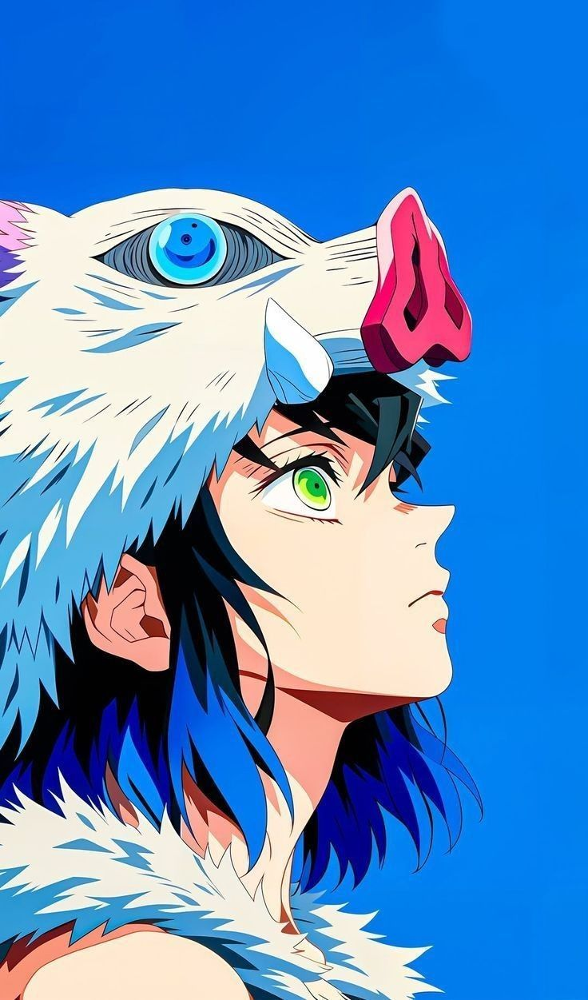
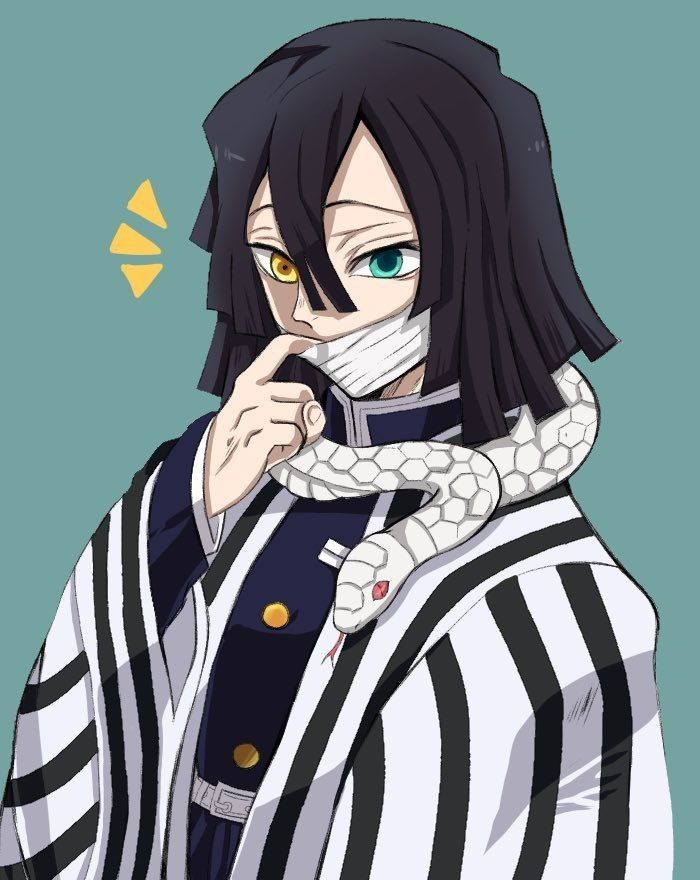
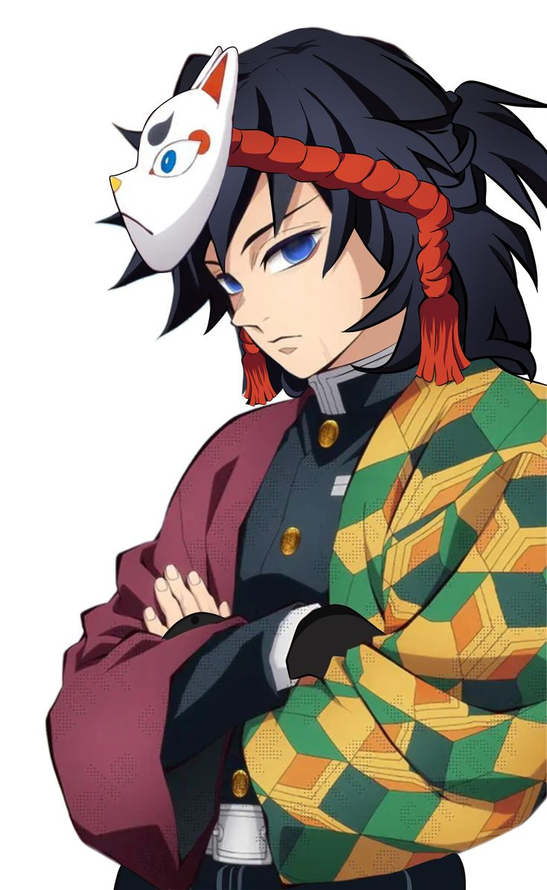
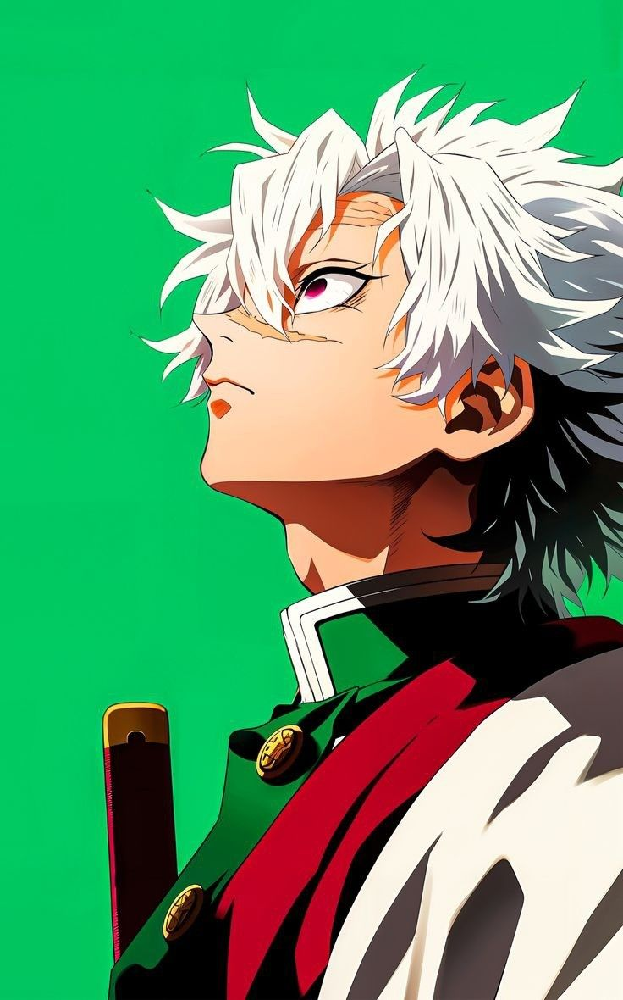
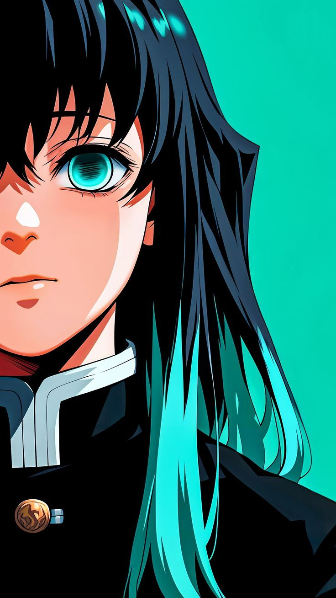
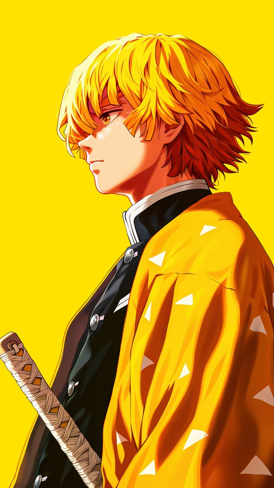
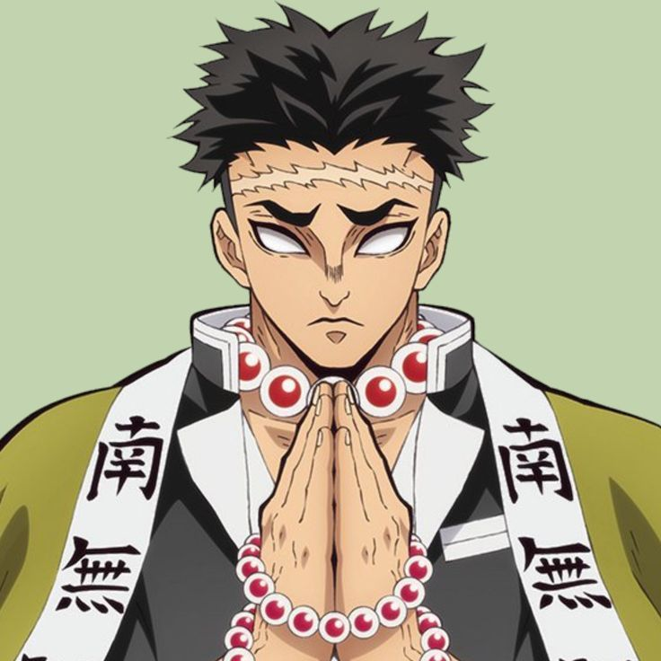
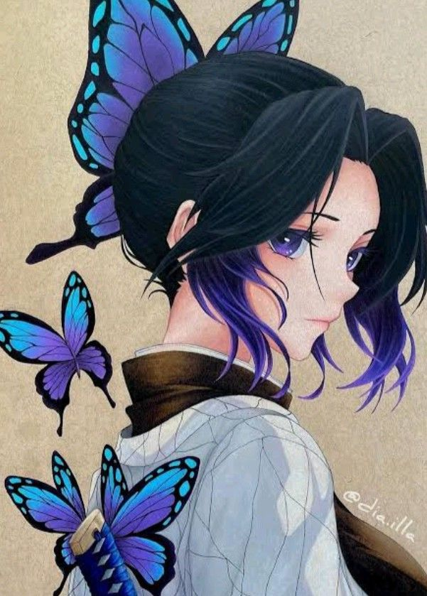
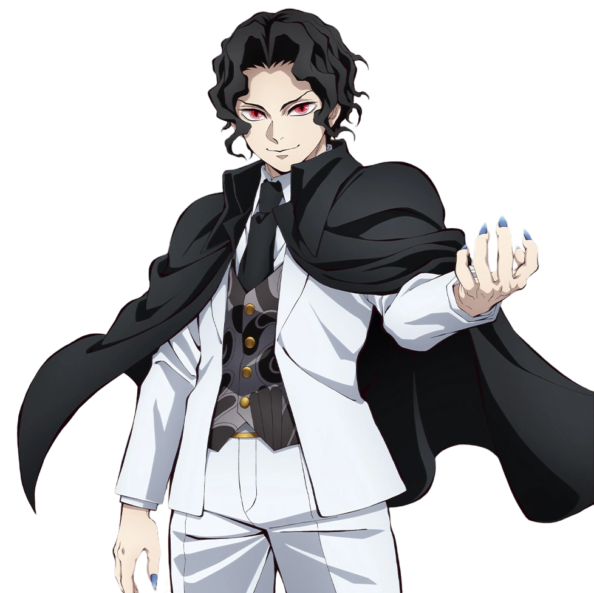

Giyu Tomioka
The Water Hashira who first encounters Tanjiro and
Nezuko, he
plays a
crucial role in their journey.
Water Hashira
Nezuko, he plays a crucial role in their journey.

Tengen Uzui
A Breathing Style that Tengen created
himself
The user holds their twin swords.
Sound Hashira
The user holds their twin swords.

Tanjiro Kamado
The main protagonist of Demon Slayer:
Kimetsu
no Yaiba.
He is a Demon Slayer in the Demon Slayer Corps.
Sun Breathing
He is a Demon Slayer in the Demon Slayer Corps.

Sanemi Shinazugawa
A Wind Breathing Sanemi is abrasive,
hot-blooded, rash,
and stubborn, often times impulsive and quick to lash out.
Wind Hashira
and stubborn, often times impulsive and quick to lash out.

Mitsuri Kanroji
A love Hashira of the Demon Slayer Corps, Mitsuri
is a very
powerful and skilled combatant
Love Hashira
powerful and skilled combatant

Obanai Iguro
A Serpent Hashira Obanai was one of the most
powerful
and
skilled swordsmen in the entire organization
Serpent Hashira
skilled swordsmen in the entire organization

Zenitsu Agatsuma
A Thunder Breathing Zenitsu comes off as a
talented and
skilled Demon Slayer, though he denies this
Thunder Breathing
skilled Demon Slayer, though he denies this
DEMONS - UPPER MOON
ANTAGONIST
Muzan Kibutsuji (鬼き舞ぶ辻つじ 無む惨ざん Kibutsuji Muzan?) is the main antagonist of Demon Slayer: Kimetsu no Yaiba. He is the Demon King, the progenitor of all other demons in existence, and the leader of the Twelve Kizuki, an organization made up of the twelve strongest demons under his direct command.

UPPER MOON 1
Kokushibo (黒こく死し牟ぼう Kokushibō?) is a major supporting antagonist of Demon Slayer: Kimetsu no Yaiba. He is a demon affiliated with the Twelve Kizuki, holding the highest position, Upper Rank One (上じょう弦げんの壱いち Jōgen no Ichi?)

UPPER MOON 2
Doma (童どう磨ま Dōma?) is a major supporting antagonist of Demon Slayer: Kimetsu no Yaiba. He is a demon affiliated with the Twelve Kizuki, holding the second highest position, Upper Rank Two (上じょう弦げんの弐に Jōgen no Ni?)

UPPER MOON 3
Akaza (猗あ窩か座ざ Akaza?) was a major supporting antagonist of Demon Slayer: Kimetsu no Yaiba. He was a demon affiliated with the Twelve Kizuki, who held the position of Upper Rank Three (上じょう弦げんの参さん Jōgen no San?)

UPPER MOON 4
Nakime (鳴なき女め Nakime?) is a recurring character and a supporting antagonist in the Infinity Castle Arc of Demon Slayer: Kimetsu no Yaiba. She is a demon who owns and controls the Infinity Castle and serves directly under Muzan Kibutsuji.